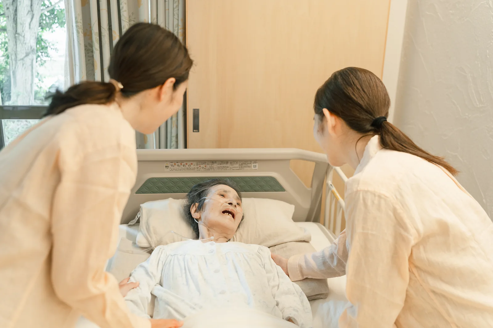
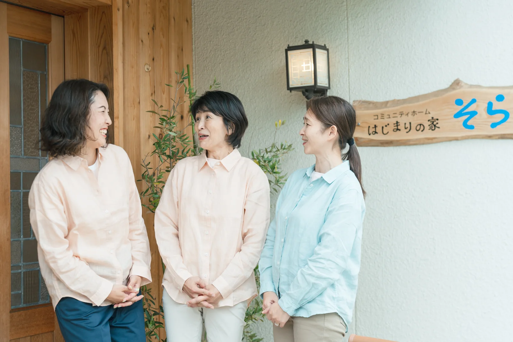

RECRUIT
正看護師を中心に、リハビリテーション専門職も募集しています。勤務日時や時間帯はご相談に応じます。
男性看護師も歓迎しています。訪問看護や看取りの経験がない方も、まずはご相談ください。
利用者様のお宅に自転車や車で訪問をして、健康のチェックや健康指導、処置等を行います。
経験や習熟度を確認しながら、段階的に業務をお任せします。
入職直後から一人で判断や訪問を任せることはせず、同行訪問や研修を通して、少しずつ慣れていただくのでご安心ください。

9時00分～18時00分（休憩1時間）
報告書作成の時間は勤務内で確保しており、残業はほぼありません。
日勤・夜勤2交替によるシフト勤務
勤務時間、休憩時間、夜勤回数については、雇用形態や配置体制に応じて決定します。
日時と時間帯は相談に応じます。お気軽にご相談ください。
東京都東村山市・東久留米市・清瀬市・小平市を中心とした訪問看護業務です。
訪問件数は1日5件程度で、ゆっくり患者さんと向き合います。業務上、車か自転車での移動となります。
長らく車に乗っていないため不安という方は、ペーパードライバー教習も受けることができます。
東京都東久留米市前沢にある、少人数（基本4床）制の住宅型有料老人ホームです。
訪問看護先に「はじまりの家そら」が含まれます。ご本人の経験や希望、勤務時間に応じて、ホームでの看護にも携わっていただきます。
常勤・非常勤、ご都合に合わせて働き方をお選びいただけます。非常勤の方でも、週3日以上の勤務をお願いしています。
安心して業務に入っていただけるよう、事業所内部での研修に力を入れています。
施設外研修も、常勤は年3回、非常勤は年1回、勤務内で参加することができます。その他の研修も、都内であれば研修代金と交通費を法人が負担し、参加することができます。
月給315,000円～459,000円
住宅手当は、本人が世帯主で本人名義の住居である場合など、法人規定によります。
時給2,000円
同行指導訪問時は時給1,800円です。
時給2,000円～
理学療法士、作業療法士の方で件数契約をご希望の場合は、1件60分4,000円です。40分は別途設定となります。
年次有給休暇、夏季休暇（常勤のみ）、年末年始休暇、慶弔休暇、産前産後休暇、育児休暇、介護休暇があります。
社会保険の加入条件は勤務時間等によります。
看護・介護ケアのものさしとして、次の5つの基本を大切にしています。
人間が本来持っている自然治癒力や回復力を引き出し、促す援助。
感染や事故など、患者や利用者の害となるような環境要因を取り除く援助。
無駄な体力やエネルギーの消耗を防ぎ、休養と安寧を確保する援助。
ただ生きるだけでなく、その人らしい生活の質（QOL）を高め、活動の幅を広げる援助。
疾患や障害に目を向けるだけでなく、残存機能を活かし、その人が主体的に生きられる力を引き出す援助。
看護の基本を実践するにあたって、アロマテラピー、フットケア（足浴、爪のケア、アロマオイル）なども、医療安全を守りながら、安心安楽を支えるケアとして取り入れています。
私たちの看護の考え方や想いに共感してくださる方と、一緒に働けたら嬉しいです。

「そら」は、新しい看護・介護の形を一緒につくっていける職場です。
利用者様にとって、より良い看護・介護の可能性を一緒に広げていきたい方、大歓迎です。ぜひ一緒に、新しいものを創り上げていくワクワクを楽しみましょう。その楽しさが、より良い看護につながると信じています。
小さいお子さんがいる方も大歓迎です。子育て中の社員も在籍しています。
勤務日時や時間帯は相談に応じますので、まずはお気軽にご相談ください。
男性看護師も大歓迎です。ぜひ一度ご相談ください。
安心して一人で訪問できるようになるまで同行し、サポートします。
経験がなく不安な方も、まずはご相談ください。
応募を迷っている段階でも構いません。仕事内容や働き方について、まずは採用担当へご相談ください。
Webフォームは正式応募ではなく、最初のご相談・応募意思のご連絡としてご利用ください。
ご相談・お問い合わせ
サービスのご利用相談、関係機関からのお問い合わせ、採用や支援についてなど、どんなご相談でもお待ちしています。いただいたご連絡には、担当者より3営業日以内にご返信いたします。
このような方を支えています